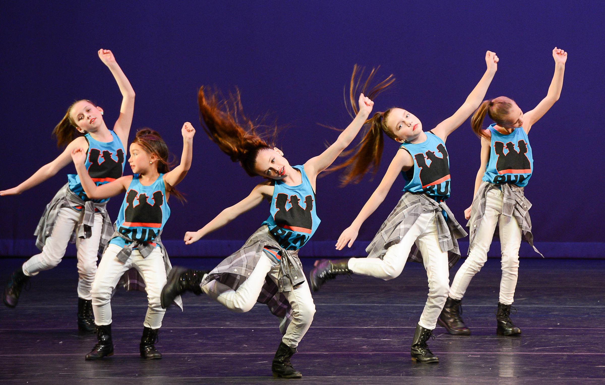
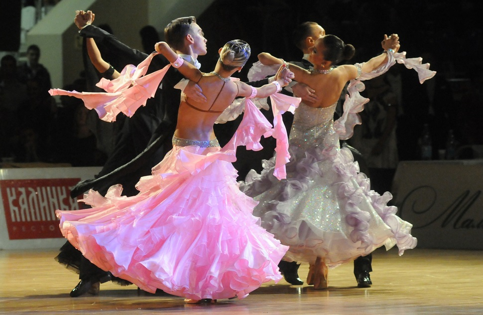

Istoria și introducerea dansurilor de gală în cadrul colectivului
Istorie și definiție Termenul "de gală" se referă la dansurile seculare care se dansau de către perechile neprofesionale, apărute în Europa medievală. Aceste dansuri s-au schimbat foarte mult - orice epocă a istoriei europene - Renașterea, Iluminarea, Clasicismul, Romantismul - au dat naștere unui complex de dansuri speciale. Pe parcursul întregii dezvoltări culturale europene, dansul de gală a fost influențat de o mare varietate de surse etnice, precum și de dansul profesionist.
Dansul de gală al secolului al XX-lea a fost format pe baza dansului european, în care, la începutul secolului al XIX-lea și al XX-lea, cultura muzicii și dansului din Africa și America Latină a inspirat o nouă viață. Marea majoritate a dansurilor de gală moderne au "rădăcini" africane, deja bine deghizate de prelucrarea tehnică a școlii europene de dans.

